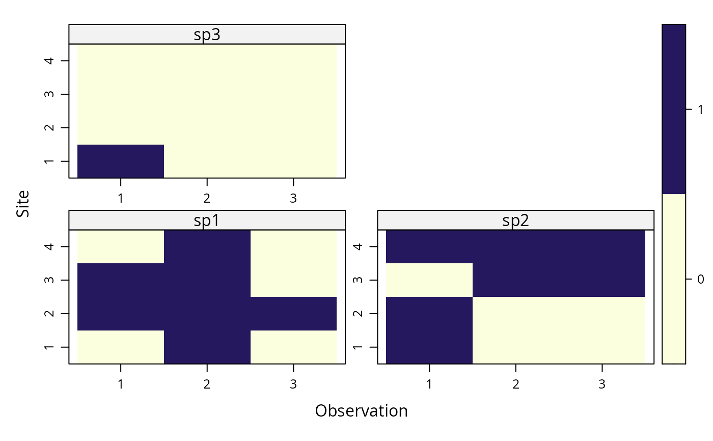

unmarkedFrameOccuMulti.RdOrganizes detection, non-detection data for multiple species along
with the covariates. This S4 class is required by the data argument
of occuMulti
unmarkedFrameOccuMulti(y, siteCovs=NULL, obsCovs=NULL,
maxOrder, mapInfo)A list (optionally a named list) of length S where each element is an MxJ matrix of the detection, non-detection data for one species, where M is the number of sites, J is the maximum number of sampling periods per site, and S is the number of species in the analysis.
A data.frame of covariates that vary at the
site level. This should have M rows and one column per covariate
Either a named list of data.frames of
covariates that vary within sites, or a data.frame with
MxJ rows in site-major order.
Optional; specify maximum interaction order. Defaults to number of species (all possible interactions). Reducing this value may speed up creation of unmarked frame if you aren't interested in higher-order interactions.
Currently ignored
unmarkedFrameOccuMulti is the S4 class that holds data to be passed
to the occuMulti model-fitting function.
an object of class unmarkedFrameOccuMulti
# Fake data
S <- 3 # number of species
M <- 4 # number of sites
J <- 3 # number of visits
y <- list(matrix(rbinom(M*J,1,0.5),M,J), # species 1
matrix(rbinom(M*J,1,0.5),M,J), # species 2
matrix(rbinom(M*J,1,0.2),M,J)) # species 3
site.covs <- data.frame(x1=1:4, x2=factor(c('A','B','A','B')))
site.covs
#> x1 x2
#> 1 1 A
#> 2 2 B
#> 3 3 A
#> 4 4 B
umf <- unmarkedFrameOccuMulti(y=y, siteCovs=site.covs,
obsCovs=NULL) # organize data
umf # look at data
#> Data frame representation of unmarkedFrame object.
#> Only showing observation matrix for species 1.
#> y.1 y.2 y.3 x1 x2
#> 1 0 1 1 1 A
#> 2 0 0 1 2 B
#> 3 0 0 1 3 A
#> 4 0 1 1 4 B
summary(umf) # summarize
#> unmarkedFrame Object
#>
#> 4 sites
#> 3 species: sp1 sp2 sp3
#> Maximum number of observations per site: 3
#> Mean number of observations per site:
#> sp1: 3 sp2: 3 sp3: 3
#> Sites with at least one detection:
#> sp1: 4 sp2: 4 sp3: 0
#> Tabulation of y observations:
#> sp1:
#> 0 1
#> 6 6
#> sp2:
#> 0 1
#> 7 5
#> sp3:
#> 0
#> 12
#>
#> Site-level covariates:
#> x1 x2
#> Min. :1.00 A:2
#> 1st Qu.:1.75 B:2
#> Median :2.50
#> Mean :2.50
#> 3rd Qu.:3.25
#> Max. :4.00
plot(umf) # visualize

#fm <- occu(~1 ~1, umf) # fit a model